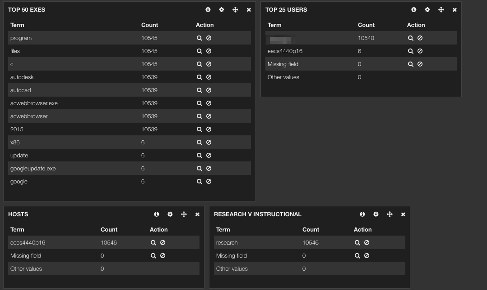
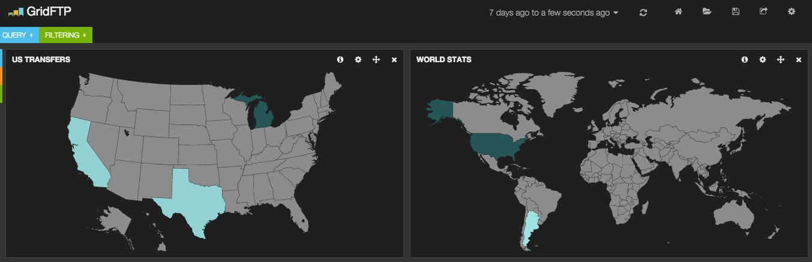
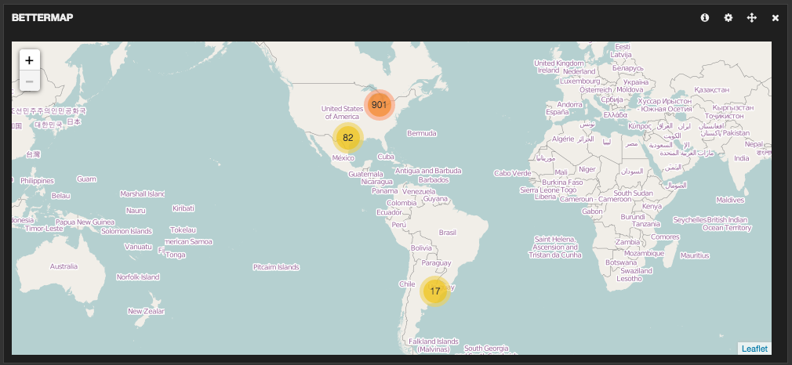

CAEN supports 100s of software packages in its student computing labs and in its HPC environment, and the list grows every year. To help us make decisions about software usage patterns, we wanted to collect and analyze data on a per-title, per-computer, per-user basis.
By gathering software usage information for everything that CAEN installs, we hope to:
The open-source ELK stack allows us to process, aggregate, store, search, and analyze logs with a lot of metadata from Windows and Linux computers.
A great place to start with ELK is http://logstash.net/docs/1.4.2/tutorials/getting-started-with-logstash.
We also use the Beaver Python daemon to ship logs to Logstash from the Linux Lab computers.
Elasticsearch also allows us to modify log entries after the fact, so we are going to insert demographic and role data to augment the username field. This data will include things like class standing (Freshman, Sophomore, etc.), department, course enrollment, and affiliation (Alumni, Student, Staff, etc.).
The ELK Environment at CAEN consists of a two-node Elasticsearch cluster, a log aggregation server to collect the logs from Beaver, and a Kibana web server to present some of the data.
The College of Engineering computer labs have about 1000 computers, each of which dual-boots into either Linux or Windows. When they are running Linux, they use the Beaver Python daemon to deliver their software usage information to an aggregation server that does some processing and delivers the logs on to the Elasticsearch cluster. When the computers are running Windows, about a dozen of them log their software usage. This is a test before we deploy the logging agents to the rest of the Windows computers.
The HPC Cluster comprises about 1500 computers, all of which run Logstash as a daemon and deliver their logs via Redis to the Elasticsearch cluster.
The configuration of each of these is different. The Linux
computers in the computer labs use Beaver and its configuration to
gather and ship software usage information from the auditd logs.
The Linux computers that make up the HPC cluster use Logstash and
its configuration to gather and ship software usage information from
their auditd logs. The Windows computers in the computer labs use
the Audit Process Creation on Success and Audit Process
Termination on Success settings in the Group Policy to log those
events via the Windows Event log, where Logstash picks up those
entries using a Windows-specific Logstash configuration file.
Once the data is in Elasticsearch, it is replicated between our two nodes and is available for searching.
Kibana is the web-based front-end that is part of the ELK stack.1 Some examples of representing software usage data and other data in Kibana are here.
You can also query Elasticsearch directly, using either a URL query
string, or a JSON-structured GET query. Version 3 of Kibana
doesn’t support aggregating data (this is similar to SQL JOIN
statements), where as the JSON-structured queries do. Additionally,
having data reported via a Python script can sometimes be more
useful than data reported via a web page. Some examples of direct
queries are here.
We are use ELK to aggregate logs from our high-performance computing cluster. Matt Britt presented these results at MoabCon in 2014, the recording of which is at https://www.youtube.com/watch?v=JRvZk9Jk54M.
We are starting to use ELK for some simple anomaly detection. After deploying software logging to the CAEN Lab computers running Windows we noticed one computer launching AutoCad over and over again with great frequency.

Figure 1: An excessive number of launches of AutoCAD
Upon further investigation the logout process for the last user of that lab computer didn’t complete and AutoCAD kept trying to relaunch.
We haven’t automated any anomoly detection, but are looking into it. The O’Reilly article Surfacing anomalies and patterns in Machine Data is one example of what is available.
We use ELK to store data on our Globus/GridFTP transfers, and we can see places where people are transferring data.

Figure 2: Where data is being transferred
ELK can also show us where the last 1000 transfers started or
ended. Most of them are on campus, which is interesting and bears
further consideration (would a shared filesystem be better? why
Globus over sftp? why not leave the data on the cluster?).

Figure 3: The last 1000 Globus transfers
Other analysis and presentation engines can also be used with Logstash data. We also use Graphite to ingest data from Logstash from our Luster Object Storage Servers, skipping Elasticsearch altogether.